Un immeuble à rénover globalement
Le projet portait sur la rénovation globale d'un immeuble d'habitation de 64 logements construit en 1982 : structure béton, commerces en rez-de-chaussée et cinq niveaux d'habitation. L'objectif du maître d'ouvrage : plus de 35 % d'économie d'énergie après travaux.
Un relevé complet de l'existant
J'ai d'abord reconstitué le bâtiment tel qu'il est : repérage sur plans, saisie du métré, puis description de tous les équipements (chauffage, émetteurs et ventilation). Cette base fidèle est indispensable pour que les économies calculées soient crédibles.
Hiérarchiser les préconisations
À partir de l'état initial, j'ai testé et comparé les principaux postes d'amélioration :
- isolation thermique par l'extérieur ;
- isolation des toitures-terrasses ;
- remplacement des menuiseries ;
- VMC hygroréglable ;
- robinets thermostatiques.
Chaque mesure a été chiffrée seule, puis combinée en bouquets de travaux. Les bouquets retenus atteignent 37,6 à 41,5 % d'économie d'énergie primaire : le bâtiment passe de 192 kWh/m²/an (étiquette D) à environ 120 kWh/m²/an (étiquette C).
Livrables : rapport d'état des lieux, modélisation du bâtiment, scénarios de travaux chiffrés et hiérarchisés avec leurs gains.
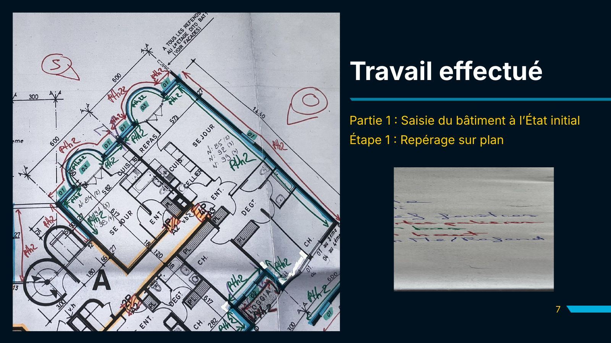
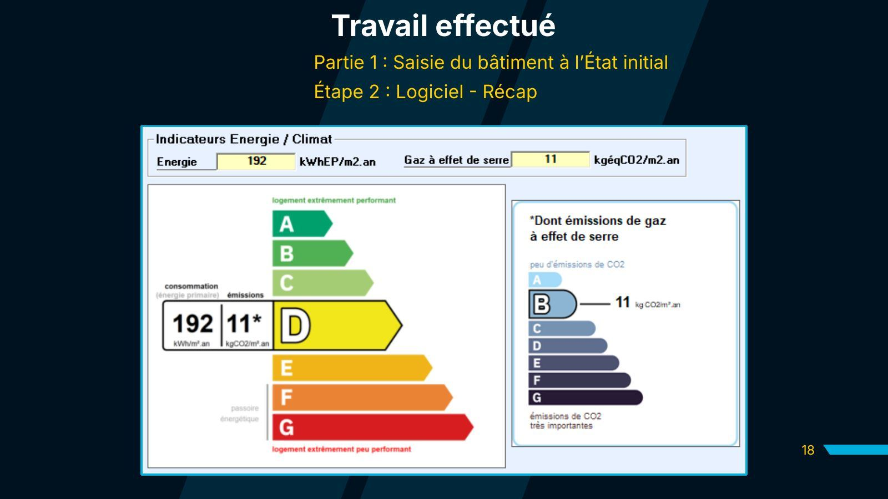
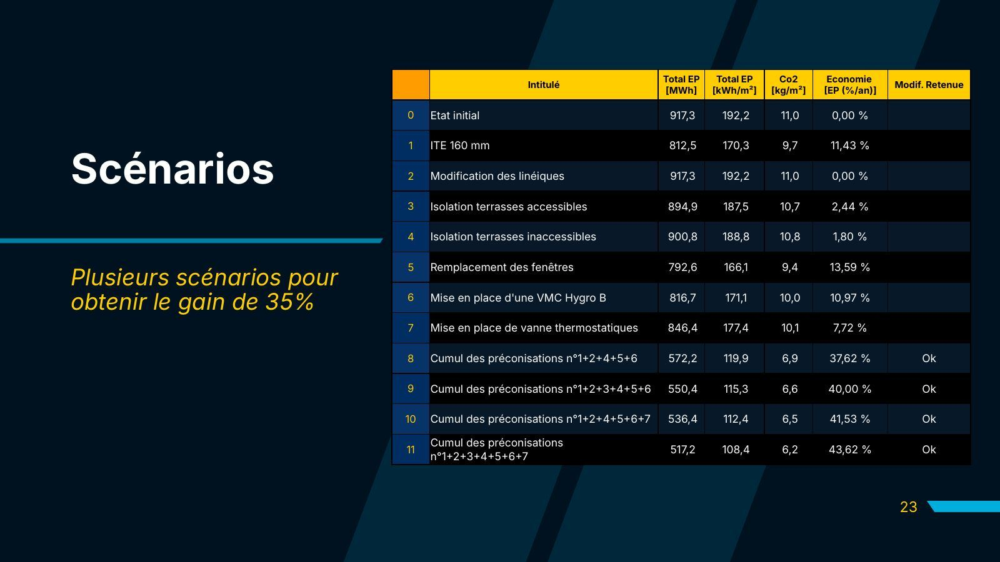
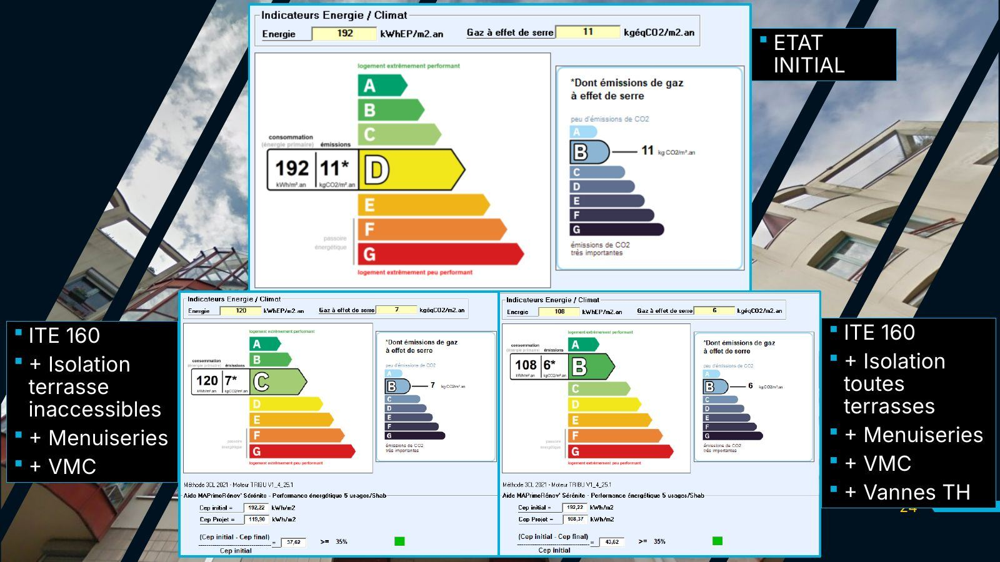
La présentation complète
Diapositives de ma présentation (BUT MT2E, 2e année). Les questionnaires remplis par les habitants ne sont pas reproduits. Cliquez sur une diapositive pour l'agrandir, puis naviguez avec les flèches.
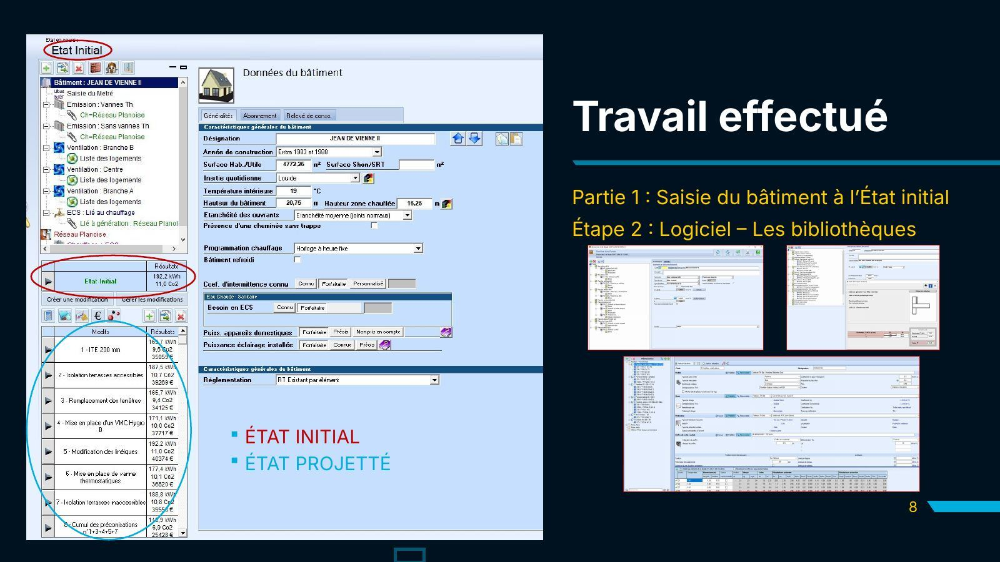
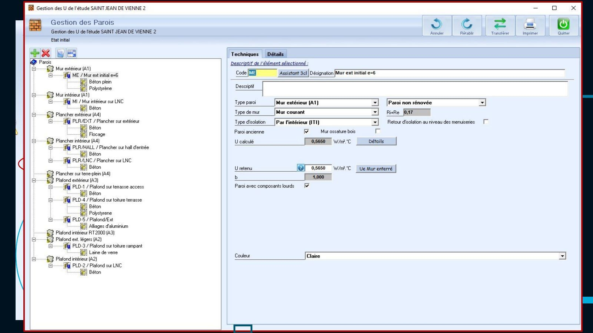
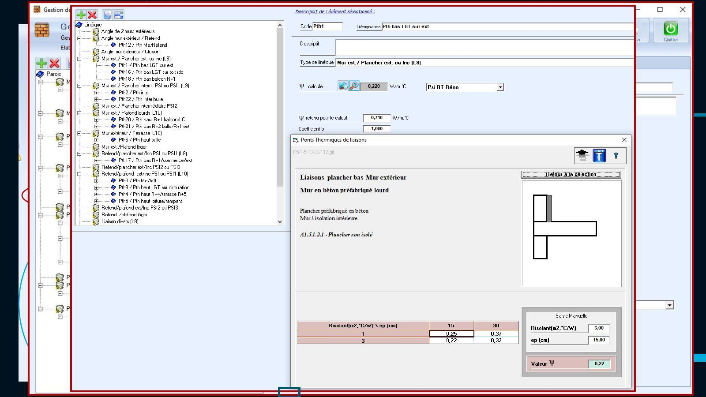
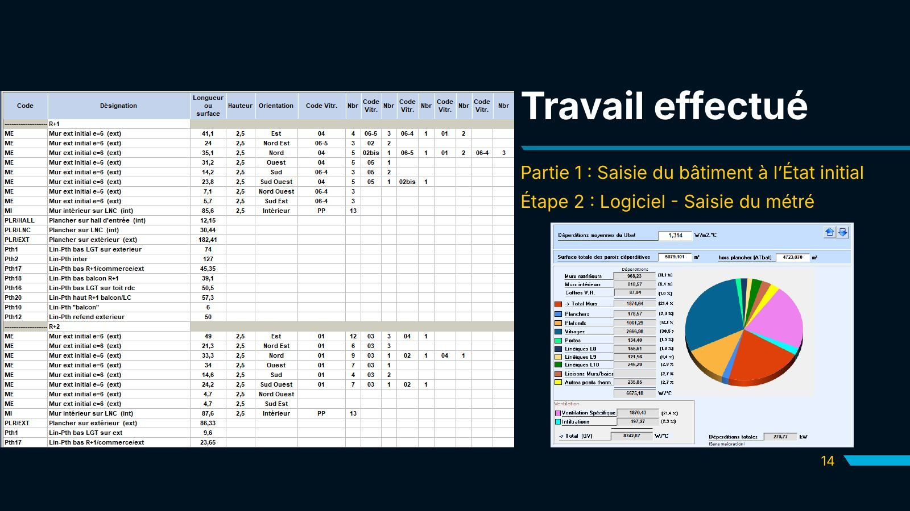
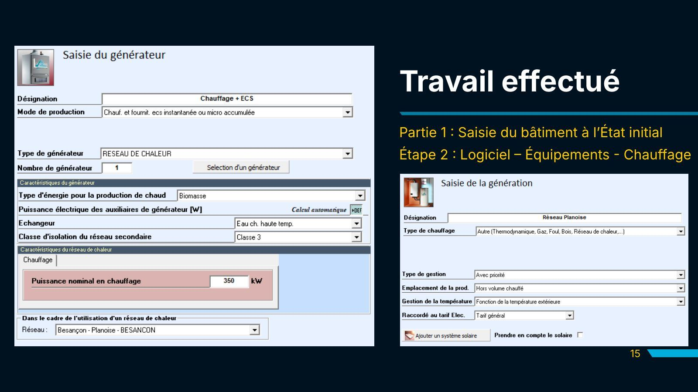
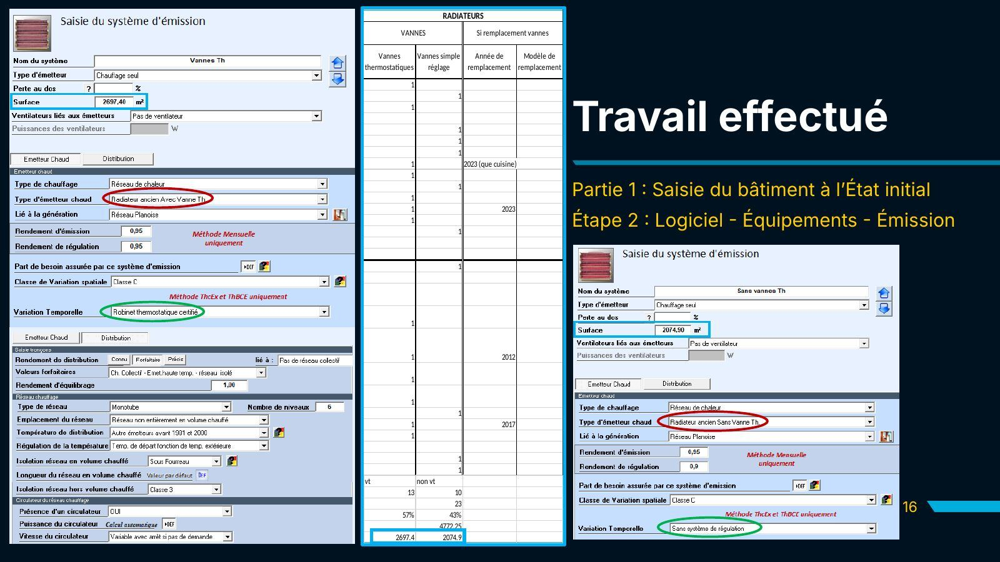
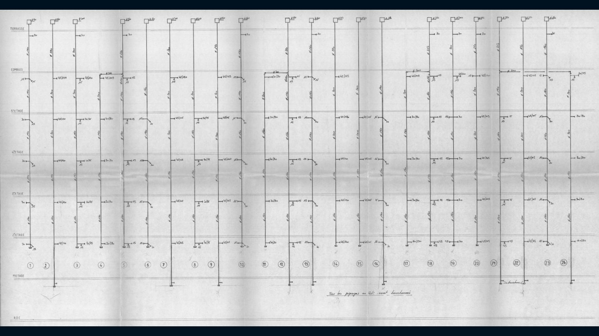
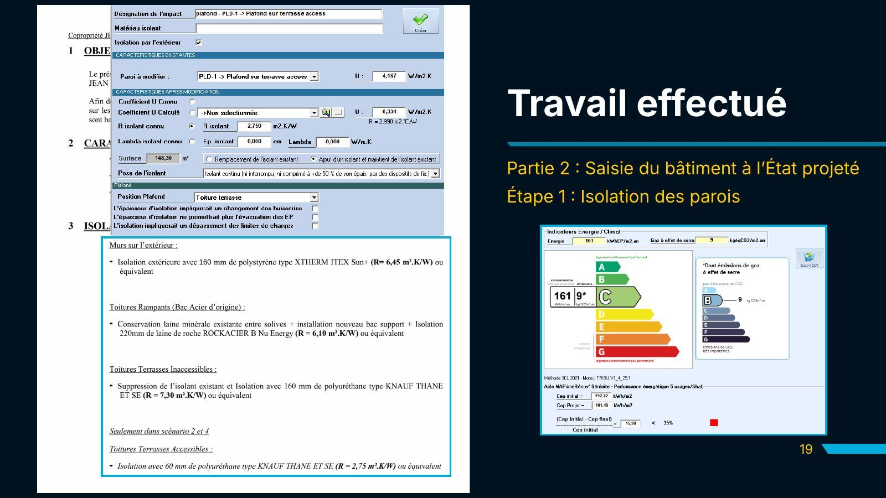
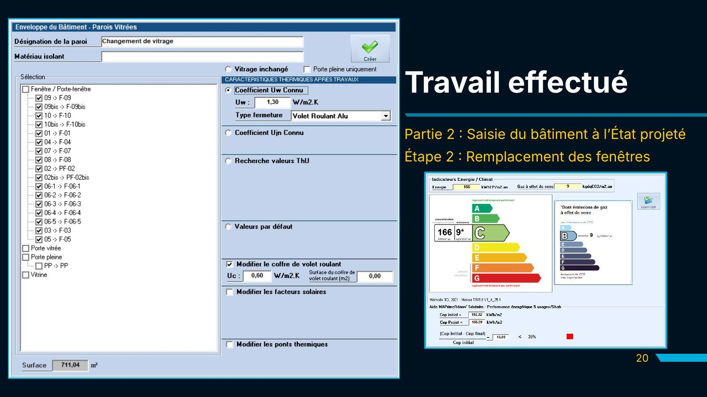
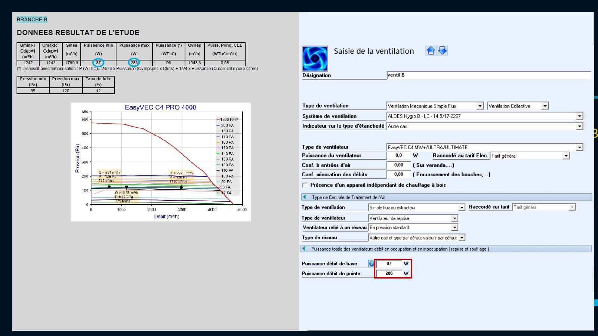
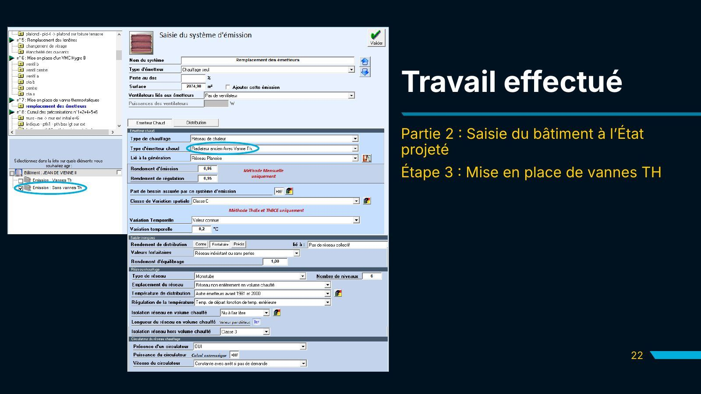
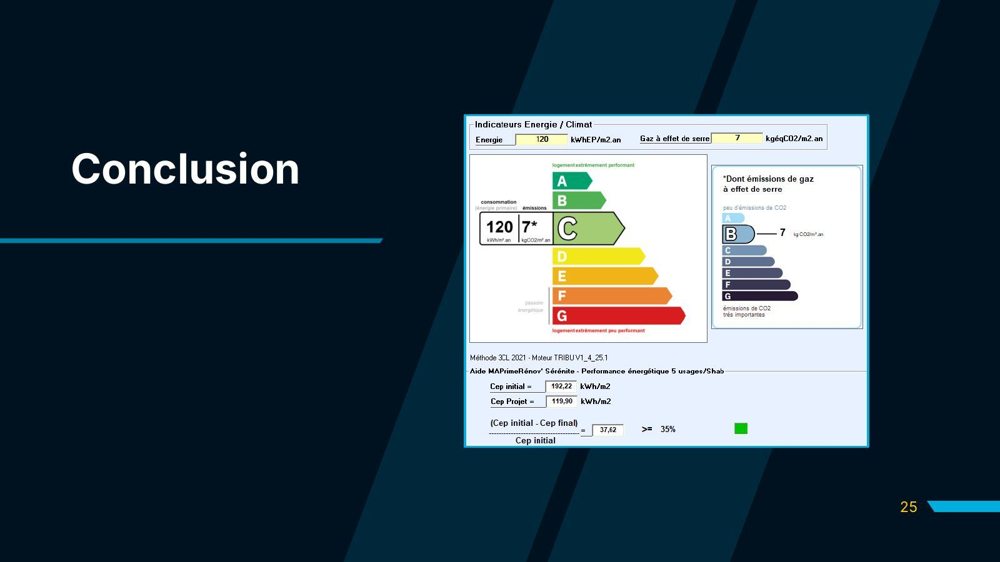